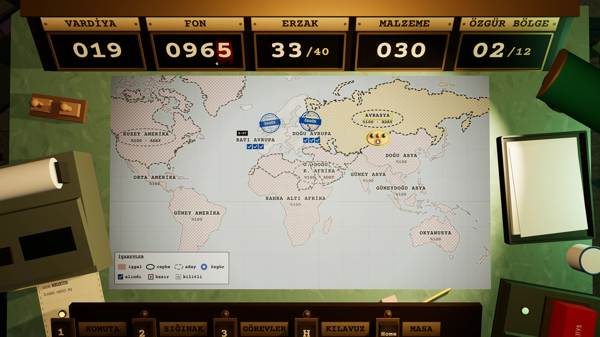

+40,0
+6
+1
YENİ CEPHE · ONAY
AVRASYA
Komşu: Doğu Avrupa ·
İŞGAL %100
01
Tedarik deposu ·
YAĞMA
02
Tahliye geçidi ·
YAĞMA
03
Sunucu merkezi ·
SUNUCU YIKIMI
Aynı anda tek cephe açık olabilir. Cephe açılınca 01 Tedarik deposu baskına hazır olur.
Enter
SEÇİLİ BÖLGEDE CEPHE AÇ
Esc
Vazgeç
Esc
AYARLAR